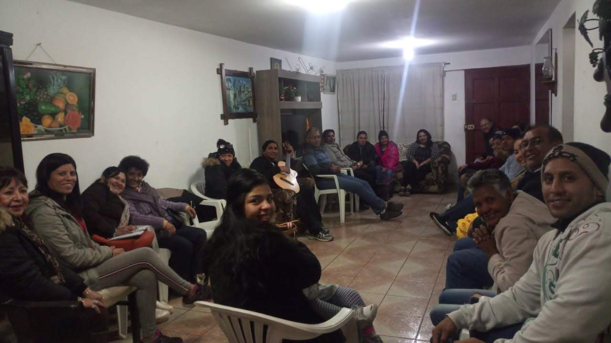

Creemos que es importante que crezcamos continuamente en nuestra relación con el Señor,
así como en las relaciones entre nosotros. En las Celulas de Bendición nos reunimos regularmente para estudiar la Biblia, orar unos por otros
y ofrecer oportunidades para construir relaciones duraderas.
Conectate
Las Celulas son una de las formas más importantes en que las personas se conectan y crecen juntas en su fe.
Sea cual sea tu edad, etapa de la vida o intereses, ¡hay un grupo para ti!

Recursos para los Lideres
No tienes que ser un pastor para guiar y discipular a otros. Solo tienes que estar dispuesto a dejar que Dios obre a través de ti.
Te proporcionaremos algunos recursos esenciales que te ayudarán a liderar tu Celula con confianza.